Co-op Mission Guide: Chain of Ascension
Slayn
Sections on this Page
Mission Summary
Amon seeks to regain control of the Tal'darim by climbing the Chain of Ascension. Assist First Ascendant Ji'nara in the rite of Rak'Shir so she can defeat Amon's champion.

Objectives
Primary Objective
- Push Amon's champion into the Pit of Sacrifice.
- Ji'nara must not be defeated.
Secondary Objective
- Kill Slayn elementals (2)
Enemy Base Analysis
Change all base analysis pictures to race:
The first camp you will have to take is positioned over your expansion. The expansions for both players are defended by static defense and a few units. Note the burrowed Ultralisk when facing Zerg compositions.
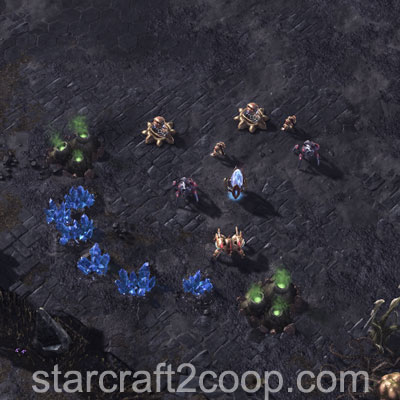
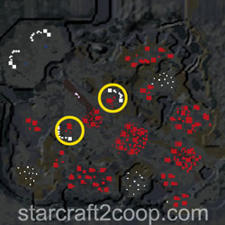
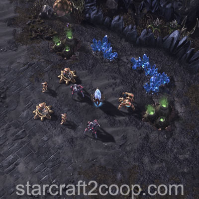
The next camp that will be captured lies in between the two expansions. This is lightly defended by some static defense and ground units.
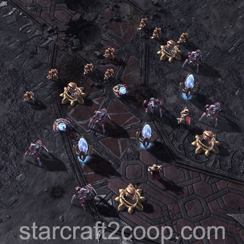
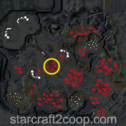
Soon after this camp is captured, the 1st set of Hybrids will spawn. The base itself is weakly defended. However, the Hybrids will spawn with a protection detail. It is usually recommended to clear this base out before the hybrid wave spawns.
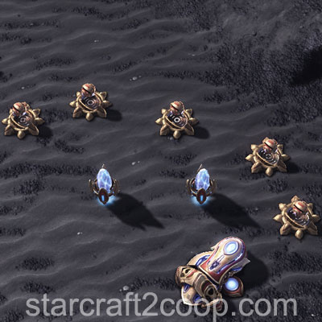
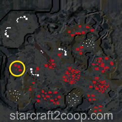
As Ji'Nara moves forward, the second set of Hybrids will spawn. The base has static defense guarding the front and some at the back (however, those are not relevant to clearing the hybrid spawn). The middle is mostly empty. However, the Hybrids will spawn with a protection detail as usual.
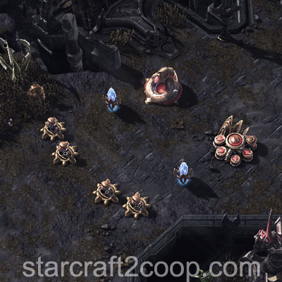
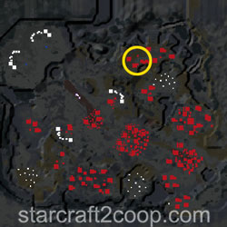
The next camp that will have to be cleared is a heavily fortified camp in the middle of the map. This area is filled with spell-casters and high-HP units.
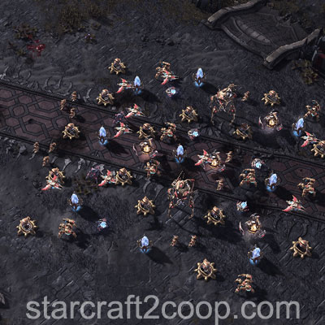
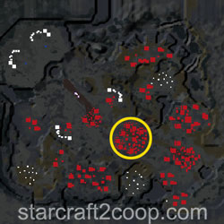
Once Ji'Nara is pushed past the camp's center, the third wave of Hybrids will spawn. The base itself is not heavily defended. However, the protection detail that the Hybrids come with is strong. A well-placed AoE can make short work of this area.
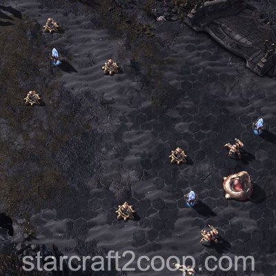
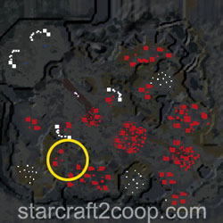
The last camp that will need to be dealt with contains high-tech units. However, it is usually easier to engage, due to both players having strong armies.
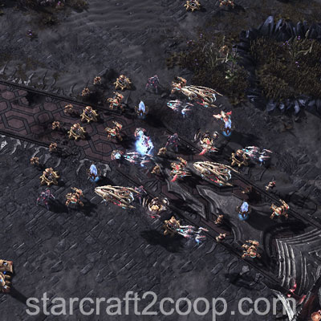
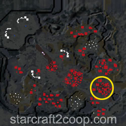
Once this camp is cleared, the last set of Hybrids spawn behind the Pit of Sacrifice once Ji'Nara reaches the trigger location. There is no static defense or guards there, which means it can't be cleared ahead of time. The protection detail, however, is crammed in that area, making it relatively difficult to engage.
Completing the Bonus Objective
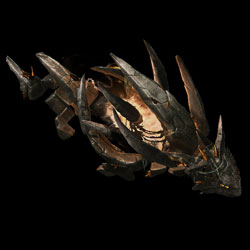
The bonus objective requires you to kill two Slayn Elementals that will appear on the minimap. The first one will always spawn in the green-marked location. The second will spawn in either of the blue-marked locations. The spawn points are shown below:
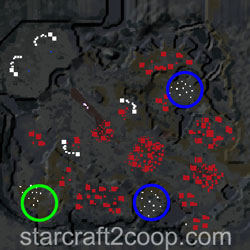
The Slayn Elementals are flying units. Hence, they can only be hit by units that can target air. The Slayn Elementals cast a skill (with an AoE marker on the ground). This skill can encase your army in a Solarite Cocoon. The cocoon will slowly damage units encased within them but can be destroyed by other forces.
Timings
Note: Information on Tech and Strength levels can be found on the Enemy Compositions page.
As Ji'Nara gets pushed forward, Hybrids will spawn with a protection detail throughout the map. Hybrids will spawn when Ji'Nara reaches a certain location on the map, as shown below:
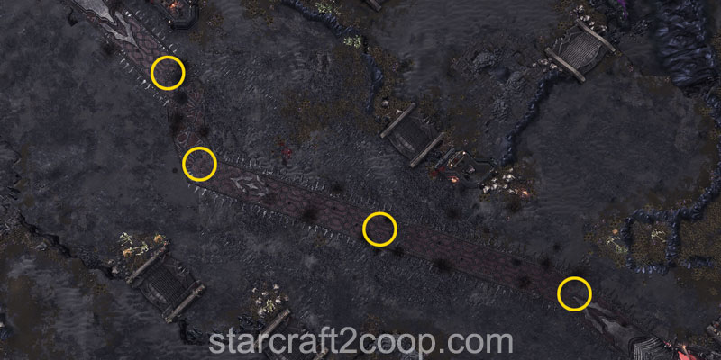
However, if players choose to delay pushing Ji'Nara, Hybrid waves will automatically spawn at certain times, regardless of her position on the map. These times are:
| Wave | Spawn Time (Minutes) | Protective Detail Tech Level | Protective Detail Strength Level |
|---|---|---|---|
| 1 | 9 | 3 | 3 |
| 2 | 15 | 4 | 4 |
| 3 | 23 | 6 | 6 |
| 4 | 30 | 6 | 6 |
At the start of the game, the possible combinations Hybrids that will spawn to push for Amon's Champion are shown below:
| Boss | Enforcer 1 | Enforcer 2 | Chance |
|---|---|---|---|
| Hybrid Dominator | Hybrid Reaver | Hybrid Reaver | 11% |
| Hybrid Dominator | Hybrid Reaver | Hybrid Nemesis | 11% |
| Hybrid Dominator | Hybrid Nemesis | Hybrid Nemesis | 11% |
| Hybrid Behemoth | Hybrid Destroyer | Hybrid Destroyer | 22% |
| Hybrid Behemoth | Hybrid Destroyer | Hybrid Nemesis | 22% |
| Hybrid Behemoth | Hybrid Nemesis | Hybrid Nemesis | 22% |
The number of hybrids of each type spawned during the Hybrid Waves is shown below:
| Wave | Boss | Enforcer 1 | Enforcer 2 |
|---|---|---|---|
| 1 | 1 | 2 | 0 |
| 2 | 1 | 1 | 2 |
| 3 | 2 | 5* | |
| 4 | 3 | 2/1/4** | |
* 5 Hybrid Enforcers will be selected one by one, with a 33% chance of selecting Enforcer 2 and a 66% chance of selecting Enforcer 1.
**2 Hybrid Encforcer 1's and 1 Hybrid Enforcer 2 will be added. Then, an additional four will be selected one by one, with a 33% chance of selecting Enforcer 2 and a 66% chance of selecting Enforcer 1.
If the mission is still not completed after the 4th Hybrid wave, more Hybrid waves will spawn (in the same location) every 5 minutes.
Due to the nature of this map, there are two types of waves on this map:
- Attack Waves: These are strong forces that target player bases. They occur infrequently throughout the mission.
- Escort Waves: These are smaller forces that are used to push Ji'Nara back. They occur frequently throughout the mission.
Attack waves will target a random player (or the player playing on a harder difficulty) and attack them first from their side. Then, the players will alternate in getting attacked until double waves start spawning.
The Attack Wave Timings for this mission are:
| Wave | Time | Tech Level | Strength Level | Type |
|---|---|---|---|---|
| 1 | 3:30 | 2 | 2 | Single |
| 2 | 7:00 | 5 | 5 | Single |
| 3 | 11:00 | 4 | 4 | Single |
| 4 | 14:00 | 5 | 5 | Single |
| 5 | 18:00 | 4 | 4 | Double |
| 6 | 21:30 | 7 | 5 | Double |
| 7 | 25:30 | 7 | 6 | Double |
Note: Every Hybrid spawn will delay all future attack waves by 2 minutes.
The Escort Wave Timings for this mission are:
| Wave | Time | Tech Level | Strength Level |
|---|---|---|---|
| 1 | 3:30 | 1 | 1 |
| 2 | 5:00 | 1 | 1 |
| 3 | 7:00 | 1 | 1 |
| 4 | 9:00 | 1 | 1 |
| 5 | 11:00 | 2 | 2 |
| 6 | 12:00 | 2 | 2 |
| 7 | 13:00 | 3 | 3 |
| 8 | 15:00 | 2 | 2 |
| 9 | 16:00 | 3 | 3 |
| 10 | 16:30 | 3 | 3 |
| 11 | 17:30 | 4 | 4 |
| 12 | 18:30 | 4 | 4 |
| 13 | 19:00 | 5 | 5 |
| 14 | 20:00 | 5 | 5 |
| 15 | 20:30 | 4 | 4 |
| 16 | 21:30 | 3 | 3 |
| 17 | 22:00 | 3 | 3 |
| 18 | 23:00 | 4 | 4 |
| 19 | 24:00 | 4 | 4 |
| 20 | 25:00 | 4 | 4 |
| 21 | 25:30 | 4 | 4 |
| 22 | 26:00 | 5 | 5 |
| 23 | 27:00 | 5 | 5 |
Note: Every Hybrid spawn will delay all future escort waves by 2 minutes.
If you choose to prolong the mission past the 28:30 mark, the following pattern will occur and repeat for the rest of the game:
- Escort Wave #20
- Escort Wave #21
- Hybrid Spawn
- Escort Wave #22
- Escort Wave #23
- Attack Wave #7
The timings for the Slayn Elementals are as follows:
| Elemental | Spawn Time (Minutes) |
|---|---|
| Elemental 1 | 10:00 |
| Elemental 2 | 16:00 |
Spawn Points
The spawn points for attack waves and escort waves are different.
For single attack waves, a player is chosen at random and then attacked. Note, if you are playing on a harder difficulty than your ally, you will be attacked first. Then, the other player will be attacked on the next wave, and the players will alternate until double waves start appearing, in which both players will be attacked at the same time. Attack waves will spawn from a player's side (spawn point #1 or #2, below) as long as Amon has a unit or a building there. If he does not, attack waves will spawn in spawn point #3.
The spawn locations for attack waves are shown below.
Attack Wave Spawn Location 1:
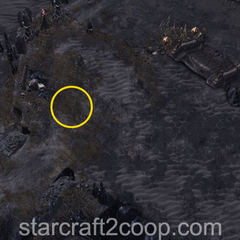
Attack Wave Spawn Location 2:
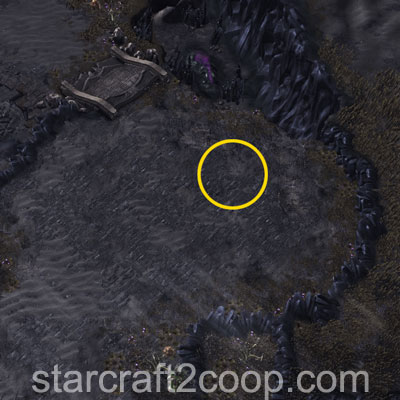
Attack Wave Spawn Location 3:
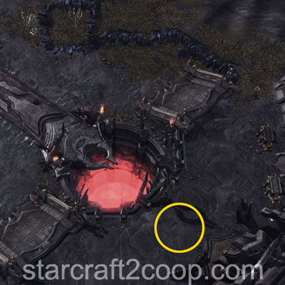
Spawn points for escort waves depending on Ji'Nara's farthest position in the mission. Escort waves will start spawning from location #1 below, then start spawning from location #2, and then to #3 when the respectful changeover point has been reached. The changeover points are shown below:
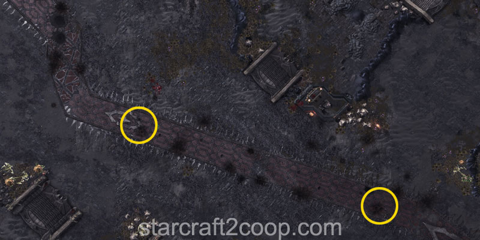
The spawn locations for escort waves are shown below.
Escort Wave Spawn Location 1:
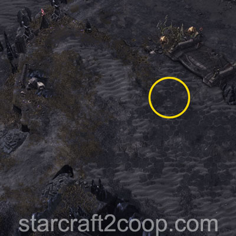
Escort Wave Spawn Location 2:
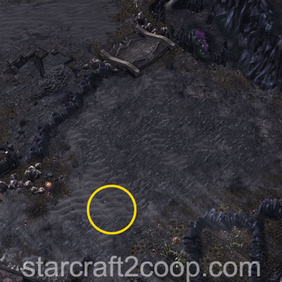
Escort Wave Spawn Location 3:
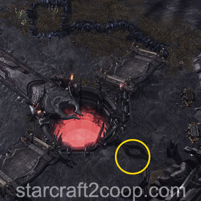
Mission Tips
- Use a drone/probe/SCV to push Ji'Nara forward, while your army clears out bases ahead of time and deals with attack waves/escort waves.
- The second attack wave in the mission is extremely strong given the early game. Save calldowns for that wave.
- Spawn the first Hybrid Superpusher spawn early to delay the deadly second attack wave.
- All waves after the fourth attack wave are double waves which attack both players' bases.
- Protoss units gain increased Shield regeneration when near Ji'Nara.
Commander-specific Tips
- Abathur: Place Toxic Nests on hybrid spawn locations before spawning the Hybrid to weaken the protection detail.
- Han & Horner: Place Mag Mines on hybrid spawn locations before spawning the Hybrid to weaken the protection detail.
- Nova: If you use Siege Tanks, place Spider-mines ahead of Hybrid spawns to weaken the protection detail.
- Raynor: If you use Vultures, place Spider-mines ahead of Hybrid spawns to weaken the protection detail.
- Stukov: Keep your Infested Colonist Compound a few spaces away from Ji'nara to maximize utility of your infested.
- Vorazun: Time Stop can be used just before the last Hybrid trigger location to skip the fourth spawn entirely and complete the mission. See the video below.
- Zagara: Build a single corruptor to apply Corruption to the Slayn Elemental before you run your Scourge into it.
- Zagara: Build your macro hatcheries at your expansion for quick reinforcements.